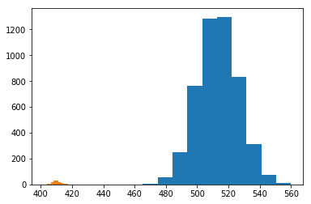
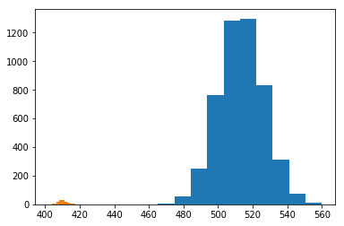

Generalized Grasping with Sawyer
Introduction
The
In multiple paragraphs
Design
Image Pipeline
(1): Depth map of a box on a table. Solid green areas correspond to errored values.
Kinect Depth Map and Error Correction:
At the start of the loop, we collect a depth map of the area of interest from the Kinect. The sensor from the kinect is less than perfect. In addition to noise, the Kinect sets the value of pixel's it can't accurately detect depth for to 2048. The values that we care about are generally within the range of 350 and 700. We ignore any values that are clipped to 2048 for classification purposes, and treat these values as part of the background.
 

(1): The histogram of depth values observed.
(2): Histogram of 2000 samples from the estimated mixture.
Gaussian Mixture Model:
The depth values within the image typically follow a bimodal distribution; a smaller mode for the depth of the object and a larger mode for the depth of the background. This distribution is typically roughly Gaussian, thus we can calssify each pixel using a Guassian Mixture Model to create an image segmentation of object versus background.
We assume the distribution of depth values for the object are i.i.d. and follow the mixture of two Gaussians, where one Gaussian corresponds to the object and the other to the background. Let \(v_{ij}\) be the observed value at \((i,j)\), we then maximize our likelihood over possible mixtures of two Gaussians. $$\max \limits_{\phi_o, \phi_b, \mu_o, \mu_b, \sigma_o, \sigma_b} \prod_{i,j} p(v_{ij}) \; : $$ $$p = \phi_o \mathcal{N}(\mu_o, \sigma_o) + \phi_b \mathcal{N}(\mu_b, \sigma_b)$$ $$\phi_o + \phi_b = 1, \; \phi_o \geq 0 , \; \phi_b \geq 0$$ This problem can be solved within very few iterations of Expectation Maximization implemented in Scikit Learn (we found 10 iterations to be consistent). Also, while our assupmtions of the the depth values being i.i.d. worked in practice, it is a strong assumption, and future work may explore using conditional probabilities or connectivity for classification.
(1): Low pass of the depth map.
(2): Resulting segmentation (green is object, purple is background) and center of mass (yellow).
Segmentation and Center of Mass:
Once we converge to a viable mixture, we can use it for classification. First, we low pass the image to remove high frequency noise and soften the edges. We found this led to cleaner segmentations than classifying on the original image. We then use our converged mixture model to classify each pixel independently.
Let \(\phi_o^*, \phi_b^*, \mu_o^*, \mu_b^*, \sigma_o^*, \sigma_b^*\) be the optimal parameters to the mixture optimization problem. Our object's depth values should be smaller than the depth values of the background, so without loss of generality let \(\mu_o^* \leq \mu_b^*\). Defining \(p_o = \mathcal{N}(\mu_o^*, \sigma_o^*)\) and \(p_b = \mathcal{N}(\mu_b^*, \sigma_b^*)\), we clasify a pixel value \(v_{ij}\) using the function $$f(v_{ij}) = \begin{cases} 1 \; \; \; \; \; \; \; \phi_o^* p_o(v_{ij}) \geq \phi_b^* p_b(v_{ij}) \\ 0 \; \; \; \; \; \; \; \phi_o^* p_o(v_{ij}) < \phi_b^* p_b(v_{ij})\end{cases}$$ To find the center of mass of the object, we first assume the object has uniform density. Letting the normalization of the segmentation be a joint probability distribution over the indices, the center of mass is then the expected index. $$\begin{bmatrix} c_x \\ c_y \end{bmatrix} = \frac{1}{\sum_{i,j} f(v_{ij})}\sum_{i,j} f(v_{ij}) \begin{bmatrix} i \\ j \end{bmatrix}$$
If the object is predicted to be strangely large or small, the observation is ignored and no action is performed. Otherwise, this center of mass is passed to the controller to move the end-affector of the Sawyer (more details below).
(1): Synthetic dumbell (green) with the angle our algorithm would grasp at.
(2): Plot of the objective function w.r.t. theta. Optimum is achieved at \(\theta = \pm \frac{\pi}{2}\).
(3): Real box (green) with grasp angle (yellow).
(4): Plot of the objective function w.r.t. theta. Optimum is achieved at \(\theta \approx \frac{\pi}{25}\).
Grasp Angle:
Because our gripper was the two-prong gripper, adapting to specific objects mainly required determining at which angle to grasp the object.
First we continue to assume the object has uniform density. We make an additional assumption that the object is simply connected. We then center the grasp above the detected center of mass, as this would balance the mass on either side of the gripper.
Before lowering the end-affector, we determine an angle to rotate the gripper by. We approached this problem using a heuristic and approximating a corresponding optimization problem. When picking up objects that are uniform density, a natural approach would be to grab the object around the plane passing through the center of mass that minimizes the cross sectional area. For example, a human picks up a dumbell around the small cylinder connecting the two large pieces, as opposed to across the ends of the two large pieces. We now formalize a way to solve for this heuristic.
First, we define the indicator function \(f: \mathbb{R}^2 \rightarrow {0, 1}\) that is centered at the center of mass (center of mass corresponds to \((0,0)\)) where \(f(x,y) = 1\) if the object occupies \((x,y)\) and \(f(x,y)=0\) otherwise.
A line passing through the origin at angle \(\theta\) is then defined as $$\mathcal{L(\theta)} = \left \{ (t \cos \theta , t \sin \theta) \; | \; t \in \mathbb{R} \right \}$$ Our goal is to find a line passing through the origin that minimizes the intersection of the line and the object. Thus, our optimization problem is $$\theta^* = \argmin \limits_{\theta \in \left [\frac{-\pi}{2}, \frac{\pi}{2} \right]} \int_{-\infty}^{\infty} f(t \cos \theta, t \sin \theta) \text{d}t$$ The objective function is \(\pi\)-periodic, allowing us to restrict the domain. In general, the objective function is not convex on \(\theta\). However, for reasonable applications, grid search is effective at finding a close to optimal solution. Additionally, if the object is a convex set, the objective function is Lipschitz-continuous on \(\theta\) allowing for a theoretical guarantee of obtaining the optimal solution using bisection method.
After having found an angle to grasp at, the end-affector is rotated by that angle and then lowered to the object. For objects that aren't simply connected (such as a donut), this algorithm might have a harder time as it would attempt to grasp around the entire object as opposed to using the holes in the object to its advantage. This is an area we hope to explore more in the future.
Implementation
Results
Conclusion
The
In multiple paragraphs